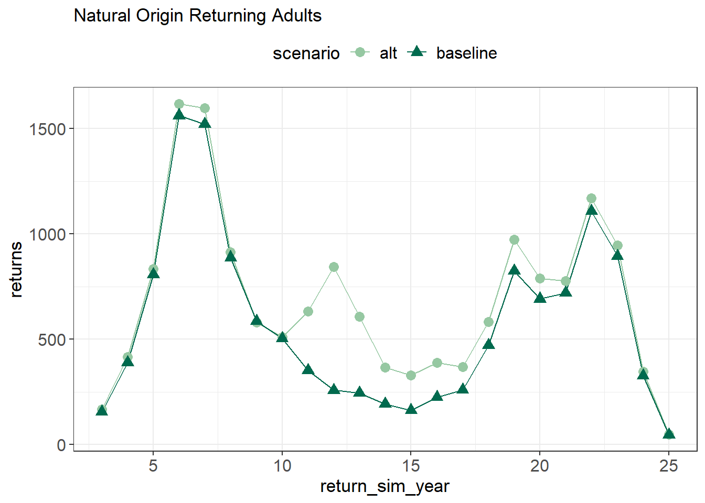
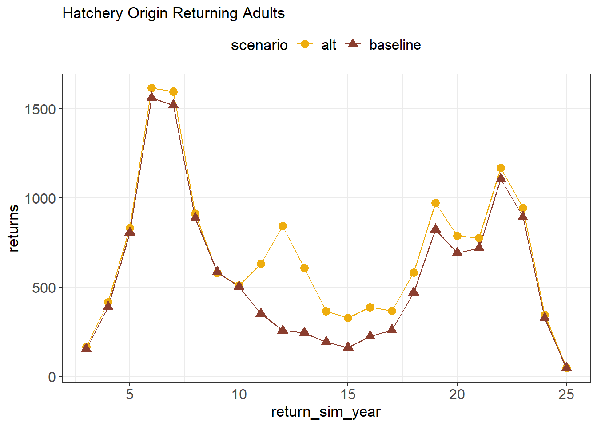
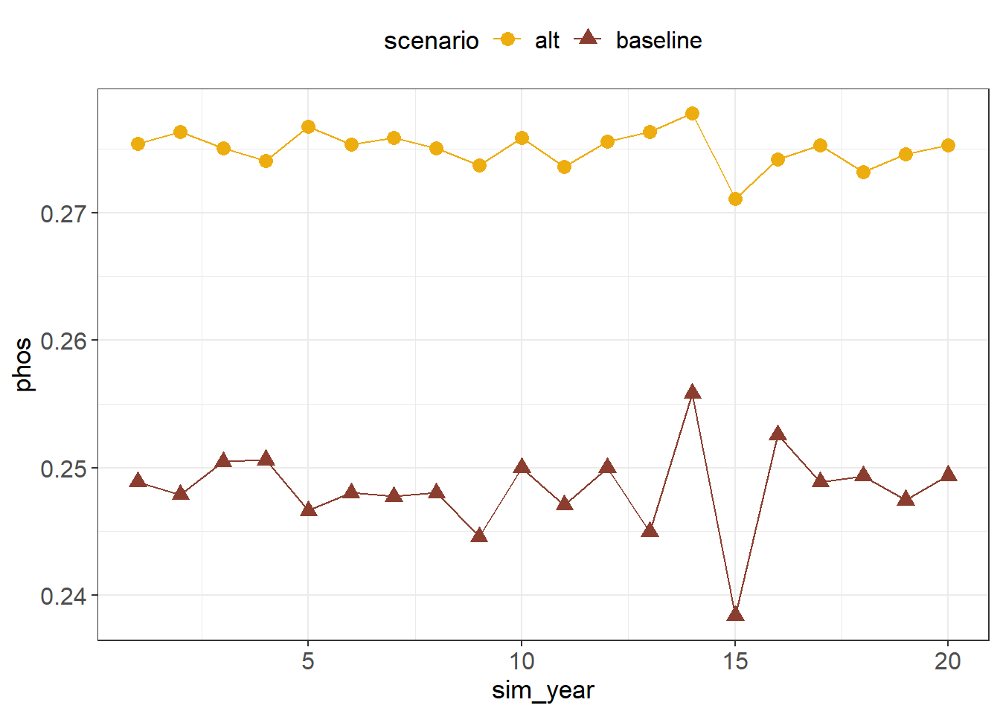

Explore Intro Scenario
Abundance
Spawners
20-year mean spawners for baseline: 829 20-year mean spawners for alt: 950
Natural origin WR returning to spawn
Do we want sim_year or return_sim_year? Do we want to break these down into age classes?

- 20-year mean natural return for baseline: 574
- 20-year mean natural return for alt: 687
Hatchery origin WR returning to spawn

- 20-year mean hatchery return for baseline: 556
- 20-year mean hatchery return for alt: 768
Frequency of population decline
- 20-year declines baseline: 12
- 20-year declines alt: 12
Frequency of catastrophic decline
- Largest 3-year-avg decline for baseline: -0.318
- Largest 3-year-avg decline for alt: -0.333
Productivity
Number of juveniles emigrating from upper Sacramento River
Is this output$juveniles or do we need to get from somewhere else?
Number of natural origin smolts surviving to reach the ocean
Do we want to view different sizes and return months? Grouped right now.

- Mean Juveniles at Chipps for baseline: 1.0403^{4}
- Mean Juveniles at Chipps for alt: 1.6448^{4}
Cohort Replacement Rate

- Mean CRR for baseline: 1.219
- Mean CRR for alt: 1.231
- Years with CRR > 1 for baseline: 7
- Years with CRR > 1 for alt: 9
Life history diversity and fitness
pHOS
